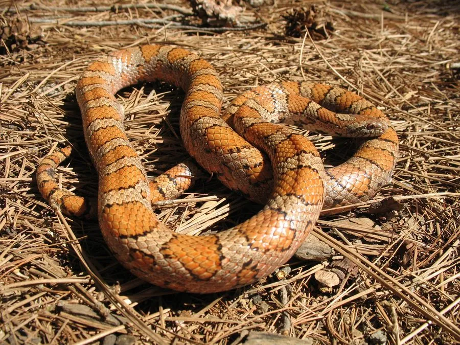

爬行动物 · 动物界
奶蛇 Lampropeltis triangulum

北美洲常见的无毒蛇，身上红、黑、白相间的环带模仿剧毒的珊瑚蛇，靠绞杀捕食鼠类，也吃蜥蜴与其他蛇。
- 分类
- 门脊索动物门纲爬行纲目有鳞目科游蛇科属王蛇属
- 栖息环境
- 北美洲至中美洲的林地、草原、农田、石堆与废弃建筑，喜隐蔽潮湿处
- 地理分布
- 加拿大东南部、美国东部至中美洲，并延伸至南美洲西北部
- 保护级别
- IUCN 无危（LC）
物种志
奶蛇体长 60–90 cm，个别个体可达 1.3 m，体重约 100–500 g。身体细长，头部与颈部区分不明显，身上排列红、黑、白或红、黑、黄相间的环带，不同产地的花纹差异很大；腹部有黑白相间的棋盘格斑纹。
它们分布于加拿大东南部、美国东部至中美洲，并延伸到南美洲西北部，栖息于林地、草原、农田、石堆和废弃建筑中。奶蛇多在夜间和黄昏活动，靠身体缠绕绞杀猎物，食物包括小鼠、田鼠、鼩鼱、蜥蜴、蛙、鸟卵和其他蛇类。繁殖期在春季，雌蛇在 6–8 月产卵 3–20 枚，孵化约 50–70 天。它们无毒，因花纹酷似珊瑚蛇而常被误认，是著名的拟态例子。
形态与习性
- 食性鼠类、鼩鼱、蜥蜴、蛙、鸟卵和其他蛇
- 体长60–90 cm，最长约 1.3 m
- 体重约 100–500 g
- 繁殖6–8 月产卵 3–20 枚，孵化 50–70 天
- 寿命约 15–20 年
- 习性夜行性，靠缠绕绞杀猎物
趣味知识
- 奶蛇的名字来自旧时传说，人们以为它会钻进牛棚偷喝牛奶。
- 它红黑相间的环带模仿剧毒珊瑚蛇，但奶蛇本身完全无毒。
- 奶蛇会捕食其他蛇类，包括小型响尾蛇，因此被归入王蛇一类。